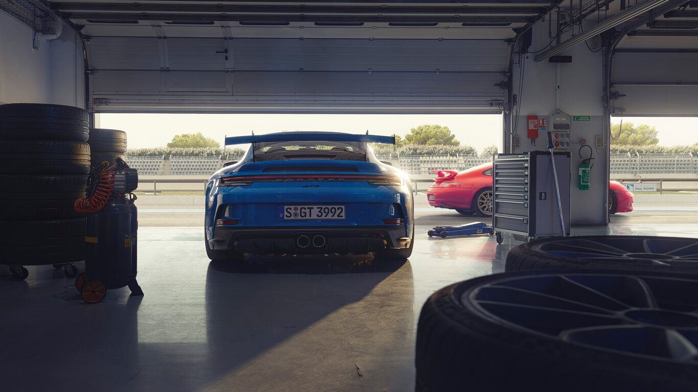
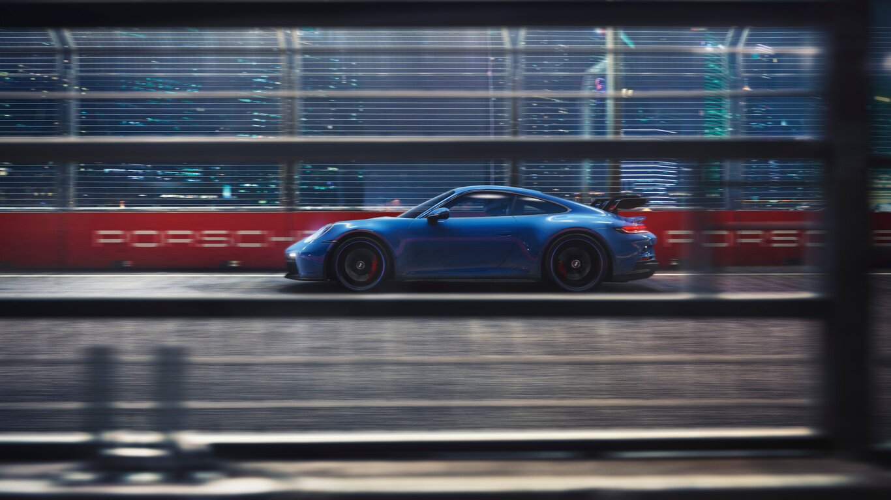

De 911 is het topmodel van Porsche, en tegelijk het meest iconische model. Het model dat in 1963 op de markt kwam is sindsdien weinig veranderd qua vorm en voorkomen. Waarom is de 911 zo populair? De 911 is uniek door zijn combinatie van snelheid met ultieme wendbaarheid. Dit is terug te zien in zijn recordtijden op de Nürburgring in het thuisland van deze ongeëvenaarde sportwagen. Wat deze wagen ook uniek maakt, is dat hij het mogelijk maakt om in minimaal 3.5 sec naar de 100 te sprinten, in een verwarmde stoel, luisterend naar je favoriete klassieke muziek via de luxe Burmester boxen. Juist, deze auto verbind luxe en prestaties op de beste manier mogelijk. Voor de bestuurder die toch nog iets sportievers wil biedt Porsche een rijke variatie aan modellen van de 911. Zo is er de basis variant, de 911 4 (4 staat voor 4 wiel aandrijving), 911 4S (s staat voor net iets sportiever en betere prestaties.) Mocht je bij een 4S nog steeds niet tevreden zijn kun je over stappen naar de Turbo modellen. Hierbij lever je wat luxe in maar krijg je er een sportwagen voor terug die superstrak op de weg ligt, onder de 3 seconde op de 100 zit en kan uitgerust worden met een grote spoiler om je mede weggenomen te laten weten dat jij zeker geen standaard "saaie" 911 rijdt. Mocht je nog ergens extra geld hebben liggen, en wat extra moed, is het ook mogelijk een 911 GT3 of GT3RS te kopen. Dit zijn de ware race monsters die net aan legaal zijn op de openbare weg, met een 0-100 van 3.9 seconde zul je vast denken, maar waarom is zijn deze 0.4 seconde langzamer dan de Turbo S? Dat is omdat deze auto's geoptimaliseerd zijn voor het circuit en de focus meer is gelegd op de wendbaarheid dan op het optrekken alleen.
Waarom is de 911 zo uiterst wendbaar? Dit komt door de motor die op de achteras ligt die zorgt voor een ultieme gewichtsverdeling wat het mogelijk maakt met 1 hand aan stuur, moeiteloos bochten en manoeuvres te ondergaan. De achterliggende motor van de Porsche 911 is door de geschiedenis heen altijd een 6 cilinder boxer (boxer is houdt in dat de cilinders horizontaal geplaatst zijn) motor geweest. De oudere modellen met een luchtgekoelde motor, en de nieuwere generaties met water gekoelde motoren. Of je een atmosferische motor heb of eentje die is uitgerust met een turbo, ligt puur aan wat voor model je kiest. De 6 cilinder boxer motoren zijn ook een stuk minder onderhoudt gevoelig dan bijvoorbeeld Italiaanse V10's of Amerikaanse V8's. Of de motoren milieu bewust zijn, valt zeker wat te zeggen, wel experimenteert Porsche enorm met het gebruik van Hybride motors en bijvoorbeeld start-stopsystemen om zo de uitstoot te minimaliseren.
Zelf heb ik het geluk gehad om in 2 verschillende modellen van de 911 te mogen rijden. Het gaat om een 2017 model 911, een 2006 Turbo model. Wat mij erg opviel bij beide auto's is dat je ze eigenlijk als een normale auto zou kunnen rijden, het voelt niet alsof je de controle snel verliest of dat de auto onverwacht iets doet, dit is erg bijzonder bij dit soort sportauto's, aangezien ze alle twee een vermogen boven de 400PK hebben wat bij veel auto's al voor gevaarlijke situaties zorgt. Echter moet je jezelf wel erg inhouden, aangezien je snel een zware rechtervoet krijgt in dit soort auto's. De auto daagt je namelijk erg uit om sneller en sportiever te rijden, en vaak doe je dit ook, aangezien je weet dat hij het kan.